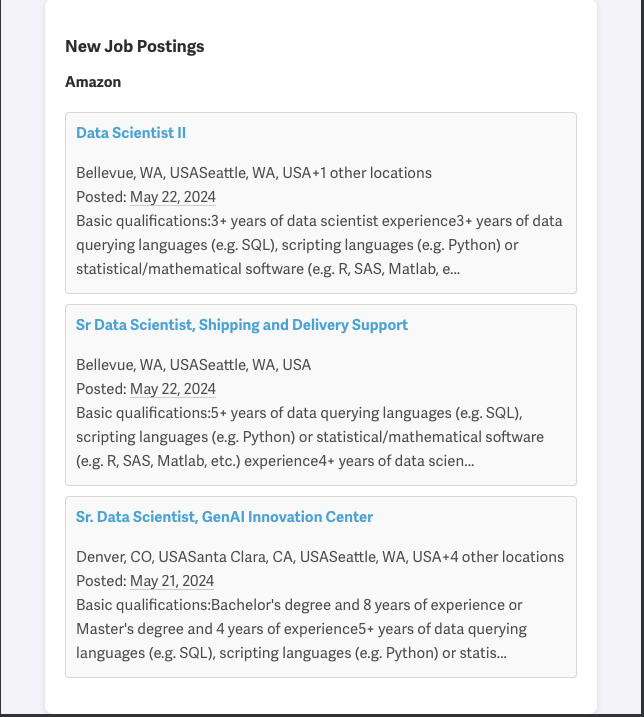

from selenium.webdriver.common.by import By
from bs4 import BeautifulSoup
import logging
import time
from selenium.common.exceptions import StaleElementReferenceException, NoSuchElementException
from selenium.webdriver.chrome.options import Options
from selenium import webdriver
from datetime import datetime
import pprint
def create_webdriver():
logging.info("Creating WebDriver instance")
chrome_options = Options()
chrome_options.add_argument("--headless")
chrome_options.add_argument("--no-sandbox")
chrome_options.add_argument("--disable-dev-shm-usage")
chrome_options.add_argument("--disable-gpu")
chrome_options.add_argument("--window-size=1920x1080")
try:
driver = webdriver.Chrome(options=chrome_options)
logging.info("WebDriver instance created successfully")
return driver
except Exception as e:
logging.error(f"Error connecting to WebDriver: {e}")
raiseIntro
Hey there! I’ve been looking for jobs recently, and I’ve felt like I’ve spent a lot of time applying to positions that had already stopped accepting applications. This process has been exhausting and really taxing on my mental health and self-esteem. I was curious if I could build my own solution to identify relevant job postings at companies I would love to work at, soon after they get posted. Hopefully, this way I can get my applications in earlier in the cycle, increasing my chances of getting noticed by recruiters.
Development Plan
My plan was to identify companies of interest (Microsoft, Google, and Amazon for this initial version), look into each company’s recruiting portal to figure out the information I need to extract job postings from the HTML, scrape each site, put the information for the most recently posted job into an email template, and run the whole cycle automatically once per day. To host the tracker, my plan was to containerize it with Docker, then host it using the Google Artifact Registry and run it using Google Cloud Run, with Cloud Scheduler determining the cadence.
Development Walkthrough
I won’t post the full code here but will provide enough to understand the process. The first step was to look into each company’s job portal and use Selenium and Beautiful Soup to load dynamic JavaScript content and extract the relevant information with BeautifulSoup. Here is an example of the process to do that for Amazon.
Scraping Job Postings
The first step is to create a Selenium WebDriver with all the configuration options needed to run a headless Chrome browser.
Next, we have the code to actually visit the Amazon job portal with URL parameters to prefilter for the types of jobs I am interested in.
def get_job_postings_amazon(driver, url='https://www.amazon.jobs/en/search?offset=0&result_limit=10&sort=recent&country%5B%5D=USA&state%5B%5D=Washington&state%5B%5D=California&state%5B%5D=Texas&state%5B%5D=Massachusetts&state%5B%5D=Colorado&distanceType=Mi&radius=24km&latitude=&longitude=&loc_group_id=&loc_query=&base_query=Data%20Scientist&city=&country=®ion=&county=&query_options=&'):
logging.info(f"Fetching job postings from Amazon: {url}")
driver.get(url)
time.sleep(5) # Wait for the page to fully load
page_source = driver.page_source
soup = BeautifulSoup(page_source, 'html.parser')
jobs = []
today = datetime.now().date()
job_tiles = soup.find_all('div', class_='job-tile')
logging.info(f"Found {len(job_tiles)} job tiles on the page")
for job in job_tiles:
title_element = job.find('h3', class_='job-title')
location_element = job.find('div', class_='location-and-id')
link_element = job.find('a', class_='read-more')
posted_date_element = job.find('h2', class_="posting-date")
description_element = job.find('div', class_="description")
if not title_element or not location_element or not link_element or not posted_date_element:
logging.warning(f"Skipping job due to missing elements: {job}")
continue
title = title_element.text.strip()
location = location_element.text.strip().replace('Locations', '').split('|')[0]
link = 'https://www.amazon.jobs' + link_element['href']
posted_date_str = posted_date_element.text.replace('Posted ', '').strip()
description = description_element.text.strip()
# Parse the posted date
try:
posted_date = datetime.strptime(posted_date_str, '%B %d, %Y').date()
except ValueError:
logging.warning(f"Skipping job with unrecognized date format: {posted_date_str}")
continue
# Log dates for debugging
logging.info(f"Today: {today}, Posted Date: {posted_date}, Difference: {(today - posted_date).days} days")
# Only consider jobs posted today or yesterday
if (today - posted_date).days > 4:
logging.info(f"Skipping job posted on {posted_date_str} (more than 1 day old)")
continue
jobs.append({
'title': title,
'location': location,
'link': link,
'posted-date': posted_date_str,
'overview-text': description
})
logging.info(f"Found {len(jobs)} relevant job postings from Amazon")
return {'Amazon': jobs}Finally, we run the code and print out the jobs that were pulled from the portal.
driver = create_webdriver()
amazon_jobs = get_job_postings_amazon(driver)
pprint.pp(amazon_jobs['Amazon'][0]) #Only printing the first job posting for legibility.{'title': 'Data Scientist II',
'location': 'Bellevue, WA, USASeattle, WA, USA+1 other locations ',
'link': 'https://www.amazon.jobs/en/jobs/2651002/data-scientist-ii',
'posted-date': 'May 22, 2024',
'overview-text': 'Basic qualifications:3+ years of data scientist '
'experience3+ years of data querying languages (e.g. SQL), '
'scripting languages (e.g. Python) or '
'statistical/mathematical software (e.g. R, SAS, Matlab, '
'etc.) experience3+ years of machine learning/statistical '
'modeling data analysis tools and techniques, and parameters '
'that affect their performance experienceExperience applying '
"theoretical models in an applied environmentMaster's "
'degree...Read more'}Sending the email
Now that we have some job postings to work with, we can put that into an email template and send the results.
import smtplib
from email.mime.multipart import MIMEMultipart
from email.mime.text import MIMEText
import logging
from datetime import datetime
import pytz
from dotenv import load_dotenv
import os
load_dotenv('_environment.local')
def send_email(job_postings, sender_email, receiver_email, email_password):
tz = pytz.timezone('America/New_York')
now = datetime.now(tz)
current_time = now.strftime("%Y-%m-%d %H:%M:%S")
# Create the email content
message = MIMEMultipart('alternative')
message['Subject'] = 'New Job Postings Alert - ' + current_time
message['From'] = sender_email
message['To'] = receiver_email
html = """
<html>
<head>
<style>
body {
font-family: Arial, sans-serif;
background-color: #f4f4f9;
margin: 0;
padding: 0;
}
.container {
width: 80%;
margin: 0 auto;
background-color: #fff;
padding: 20px;
box-shadow: 0 2px 5px rgba(0, 0, 0, 0.1);
border-radius: 8px;
}
h2, h3 {
color: #333;
}
ul {
list-style-type: none;
padding: 0;
}
li {
background-color: #fafafa;
margin: 10px 0;
padding: 10px;
border-radius: 4px;
border: 1px solid #ddd;
}
a {
text-decoration: none;
color: #0366d6;
font-weight: bold;
}
a:hover {
text-decoration: underline;
}
.job-title {
font-size: 16px;
margin: 0;
}
.job-details {
color: #555;
font-size: 14px;
}
</style>
</head>
<body>
<div class="container">
<h2>New Job Postings</h2>
"""
# Debugging: Track the HTML generation
logging.info("Generating email HTML content")
for company, jobs in job_postings.items():
html += f"<h3>{company}</h3><ul>"
for job in jobs:
overview_text = job['overview-text']
if len(overview_text) > 200: # Truncate to 200 characters
overview_text = overview_text[:200] + '...'
job_html = f"""
<li>
<p class="job-title"><a href='{job['link']}'>{job['title']}</a></p>
<p class="job-details">{job['location']}<br>Posted: {job['posted-date']}<br>{overview_text}</p>
</li>
"""
html += job_html
logging.info(f"Added job HTML: {job_html.strip()}") # Debugging: Log each job HTML
html += "</ul>"
html += """
</div>
</body>
</html>
"""
logging.info(f"Final email HTML content length: {len(html)}") # Debugging: Log final HTML length
message.attach(MIMEText(html, 'html'))
# Send the email
try:
with smtplib.SMTP_SSL('smtp.gmail.com', 465) as server:
server.login(sender_email, email_password)
server.sendmail(sender_email, receiver_email, message.as_string())
logging.info("Email sent successfully")
except Exception as e:
logging.error(f"Failed to send email: {e}")
job_postings = {}
job_postings.update(amazon_jobs)
send_email(job_postings, os.getenv('SENDER_EMAIL'), os.getenv('RECEIVER_EMAIL'), os.getenv('EMAIL_PASSWORD'))And here is a screenshot of the email that was sent.

Deployment
Now that we have working code to scrape a job portal and a function to format it and send it as an email, we need a plan to deploy the project. To deploy the project, I containerized the app using Docker and then used a combination of GCP Cloud Run to run the container and Cloud Scheduler to run it once a day on a cron schedule.
Future Directions
I definitely don’t see this as a finished product. In the future, I plan to continue adding new companies; there are just so many cool companies doing exciting, groundbreaking work in machine learning and data science. I also have plans to integrate the Notion API to send the scraped posts directly to the Notion database I use to organize my job applications. I would also like to experiment with integrating the OpenAI API to have GPT-4 score each job posting based on how qualified I am for the position by comparing each job to my resume. So stay tuned for a post on those updates!